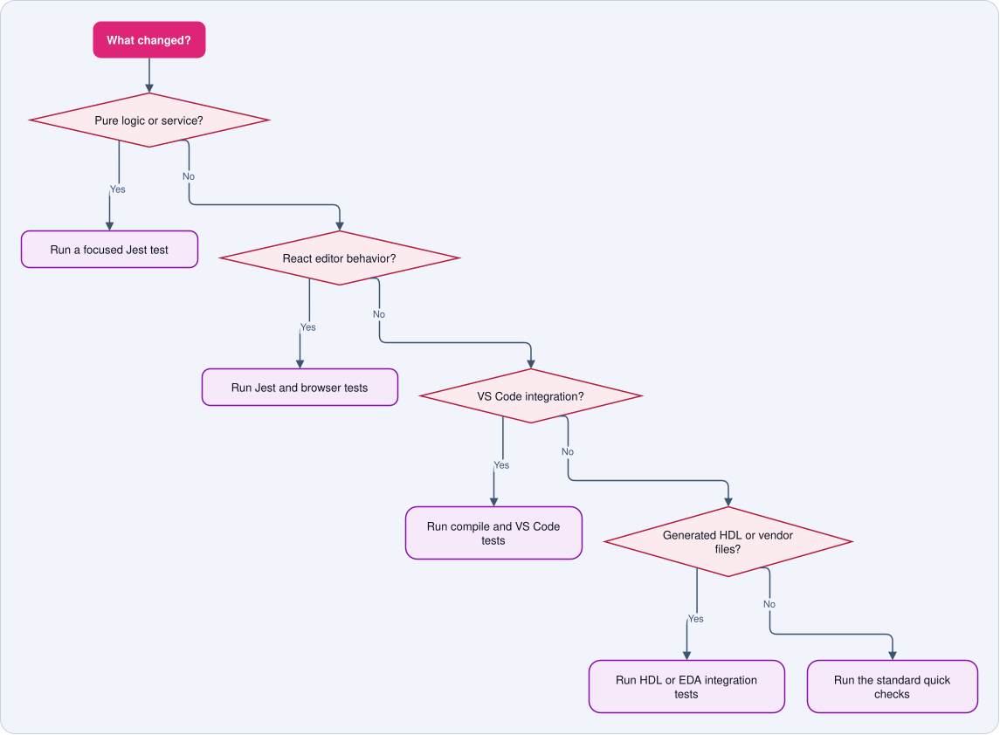

Testing¶
Use the smallest test that covers your change, then run the broader checks before opening a pull request.
Quick start¶
npm run lint
npm run type-check
npm test
npm run compile
npm test runs the unit tests. The pretest step also checks that the
ipcraft-spec submodule is available. If it is missing, run:
git submodule update --init --recursive
Choose the right test¶

| Change | Start with | Also run |
|---|---|---|
| Algorithm, parser, service, or utility | npm test |
npm run type-check |
| React component or editor interaction | npm test |
npm run test:browser |
| Extension host or VS Code command | npm run compile |
npm run test:e2e |
| Generator template or HDL output | npm run test:integration:hdl |
Relevant vendor test |
| Documentation only | mkdocs build --strict |
Link and spelling review |
Test suites¶
Unit tests¶
Unit tests use Jest and cover pure functions, services, and React components. The Jest configuration is not in the repository root, so always pass it when running one file or one named test:
npx jest --config config/jest.config.js src/test/suite/services/YamlValidator.test.ts
npx jest --config config/jest.config.js -t "should parse valid YAML"
Run the complete unit suite with:
npm test
Tests use the shared VS Code mock in __mocks__/vscode.ts. Extend that mock
when a test needs another VS Code API. Do not create a separate mock in each
test file.
Browser tests¶
Browser tests use Playwright to exercise the Memory Map and IP Core webviews without starting VS Code:
npm run compile
npm run test:browser
The test harness passes YAML to the webview through window.__RENDER__.
Use browser tests for keyboard navigation, drag behavior, focus, and other
interactions that depend on a real browser.
VS Code tests¶
These tests start a real VS Code Extension Development Host:
npm run compile
npm run test:e2e
Use them for extension activation, command registration, custom editors, and behavior that depends on VS Code itself.
HDL integration tests¶
These tests generate HDL and compile it with GHDL or Icarus Verilog:
npm run test:integration:hdl
Use this suite after changing schemas, generator logic, or HDL templates.
Vendor integration tests¶
Vendor tests validate generated Quartus and Vivado projects:
npm run test:integration:quartus
npm run test:integration:vivado
These tests need the matching vendor tools or configured container support. See Run the EDA integration tests.
Where tests live¶
| Test type | Location | Environment |
|---|---|---|
| Unit and React tests | src/test/suite/ |
Jest with jsdom |
| VS Code tests | src/test/e2e/ |
VS Code Extension Host |
| Browser tests | src/test/browser/ |
Playwright |
| HDL and vendor tests | src/test/integration/ |
Node plus external tools |
| Shared test inputs | src/test/fixtures/ |
YAML and generated examples |
Writing a test¶
- Put the test in the suite that matches the environment it needs.
- Use the smallest input that demonstrates the behavior.
- Check the visible result or written document, not an internal detail.
- Add a regression test when fixing a bug.
- Run the focused test before running the full suite.
For browser tests, prefer stable roles and labels over CSS implementation details. For generator tests, check meaningful output and compile it when possible.
Common failures¶
The submodule is missing¶
git submodule update --init --recursive
Browser tests use an old bundle¶
Rebuild before running Playwright:
npm run compile
npm run test:browser
A VS Code test cannot find compiled files¶
Run npm run compile first. These tests load compiled output, not TypeScript
source files.
A mock works once and then disappears¶
Jest resets mock implementations between tests. Restore the implementation in
beforeEach.
Jest collects the wrong files¶
Use --config config/jest.config.js. Browser tests use Playwright, and VS Code
tests use their own runner.
Before opening a pull request¶
npm run lint
npm run type-check
npm test
npm run compile
Then run the browser, VS Code, HDL, or vendor suites that cover the changed area. In the pull request, state which commands you ran and note any suite you could not run locally.